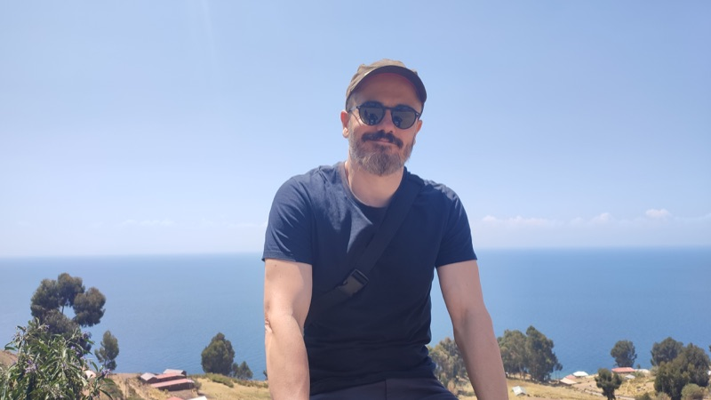
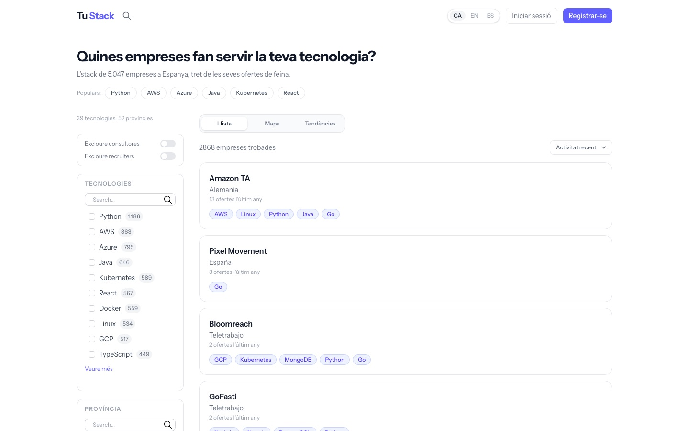
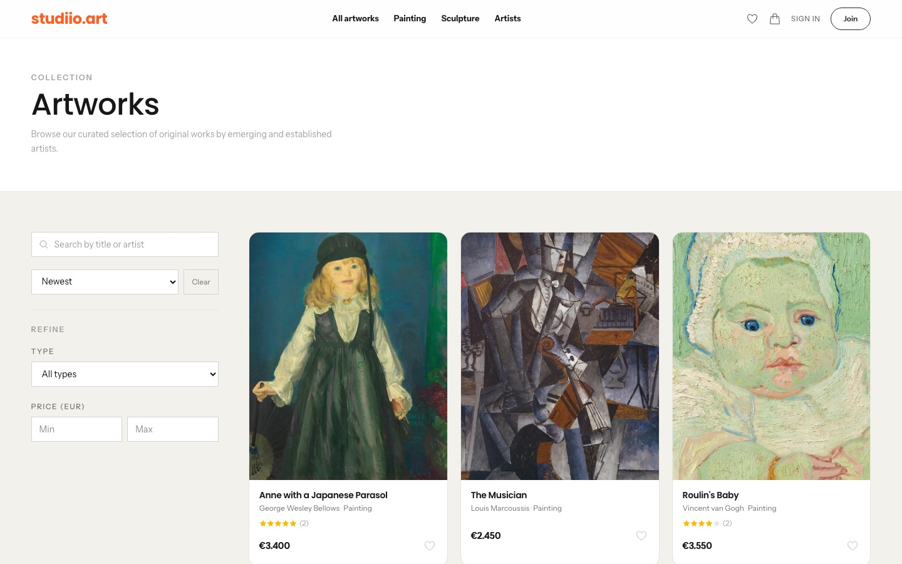

Projects

Laravel · Redis · Horizon · MySQL · Meilisearch · Gemini · Filament · Alpine.js

Laravel · Filament · Stripe · Gemini · Pinecone · Three.js
About
Backend
Frontend
AI and integrations
Contact
If you think I'd fit in your team, or you'd like to talk about any of these projects, drop me a line. My CV is on LinkedIn.